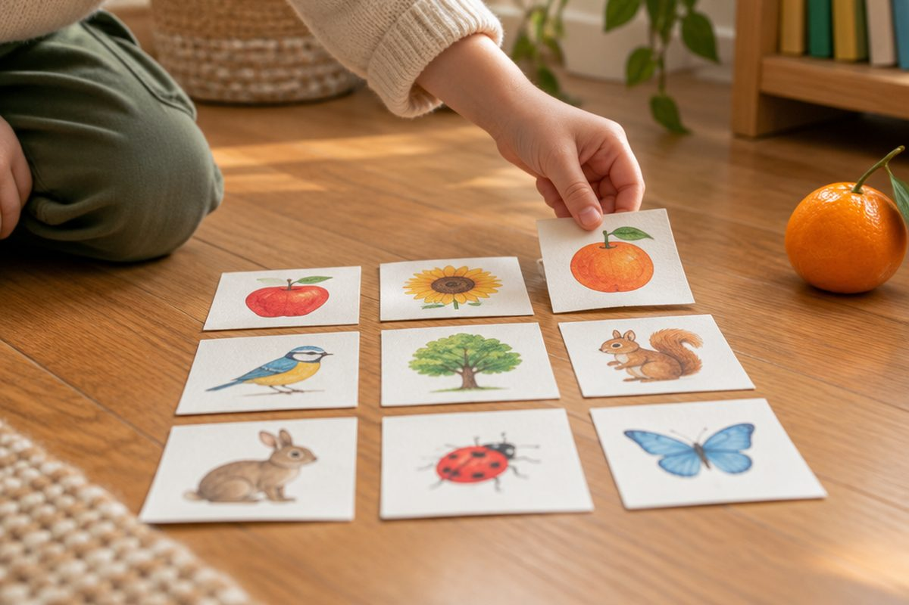

히라가나 마지막 글자 ん까지 다 읽어 볼까?

드디어 히라가나 46글자의 마지막 부분이에요! や행, ら행, わ행과 특별한 글자 ん을 배우면 기본 히라가나를 모두 읽을 수 있어요.
세 글자뿐인 や행
や행은 や(ya, 야), ゆ(yu, 유), よ(yo, 요) 세 글자예요. 다른 줄과 달리 다섯 글자가 아니라 세 글자뿐이에요.
오십음도 표에서 や행의 い 자리와 え 자리는 비어 있어요. 그 자리에 쓰던 글자는 오늘날 쓰지 않거든요.
やま(yama, 야마) 산 / ゆき(yuki, 유키) 눈 / よる(yoru, 요루) 밤
r 소리 줄, ら행
ら행은 ら(ra, 라), り(ri, 리), る(ru, 루), れ(re, 레), ろ(ro, 로)예요. 로마자는 r이지만 소리는 우리말 'ㄹ'과 거의 같아요.
る와 ろ는 닮았어요. る는 아래에 작은 고리가 있고, ろ는 고리 없이 끝나요.
れ, わ, ね는 왼쪽에 세로 막대가 있는 삼총사예요. 끝을 보고 구별해요. れ는 끝이 바깥으로 툭 튀어나가고, わ는 둥글게 감싸고, ね는 작은 고리로 끝나요.
りす(risu, 리스) 다람쥐 / さる(saru, 사루) 원숭이 / くるま(kuruma, 쿠루마) 자동차 / そら(sora, 소라) 하늘
わ, を 그리고 특별한 글자 ん
わ행에는 わ(wa, 와)와 を(o, 오) 두 글자가 있어요. を는 お와 똑같이 '오'라고 읽지만, 문장에서 '~을/를'이라는 뜻으로만 써요.
ん(n, 응)은 혼자서 한 박자를 차지하는 특별한 글자예요. 우리말 받침처럼 앞 글자에 붙어서 소리 나고, 낱말 맨 앞에는 절대 오지 않아요.
ん은 뒤에 오는 소리에 따라 'ㄴ', 'ㅁ', 'ㅇ' 받침처럼 들려요. 낱말 끝에 오면 콧소리 'ㅇ'에 가깝게 들려요.
ほん(hon, 홍) 책 / みかん(mikan, 미캉) 귤 / ほんを よみます(hon o yomimasu, 홍오 요미마스) 책을 읽어요
히라가나 46글자를 다 배웠어요
あ행부터 ん까지 기본 히라가나 46글자를 모두 배웠어요. 이제 어떤 히라가나 낱말이든 한 글자씩 읽어 낼 수 있어요.
헷갈리는 글자가 있으면 오십음도 표를 보며 다시 확인해요. 매일 다섯 글자씩 소리 내어 읽으면 금방 익숙해져요.
わに(wani, 와니) 악어 / わたし(watashi, 와타시) 나 / ゆめ(yume, 유메) 꿈
핵심 낱말
- や행
- や, ゆ, よ 세 글자뿐인 줄.
- ら행
- ら, り, る, れ, ろ. 우리말 'ㄹ' 소리와 비슷해요.
- を
- '오'로 읽고, 문장에서 '~을/를'이라는 뜻으로만 쓰는 글자.
- ん
- 받침처럼 앞 글자에 붙어 소리 나는 글자. 낱말 맨 앞에는 오지 않아요.
- 오십음도
- 히라가나를 줄과 칸에 맞춰 늘어놓은 표.
꼭 알아야 할 표현
| やゆよ | や행 세 글자 | ya yu yo (야 유 요) |
| らりるれろ | ら행 다섯 글자 | ra ri ru re ro (라 리 루 레 로) |
| わをん | わ, を, ん | wa o n (와 오 응) |
| ゆき | 눈(하늘에서 내리는 눈) ❄️ | yuki (유키) |
| よる | 밤 🌙 | yoru (요루) |
| そら | 하늘 ☁️ | sora (소라) |
| さる | 원숭이 🐒 | saru (사루) |
| くるま | 자동차 🚗 | kuruma (쿠루마) |
| わに | 악어 🐊 | wani (와니) |
| ほん | 책 📖 | hon (홍) |
| みかん | 귤 🍊 | mikan (미캉) |
| ほんを よみます | 책을 읽어요 | hon o yomimasu (홍오 요미마스) |
한 줄 정리
- や행은 や ゆ よ 세 글자, ら행은 ら り る れ ろ(라 리 루 레 로)예요.
- わ행의 を는 '오'로 읽고 '~을/를'이라는 뜻으로만 써요.
- ん은 받침처럼 소리 나는 글자이고, 이제 기본 히라가나 46글자를 모두 배웠어요.